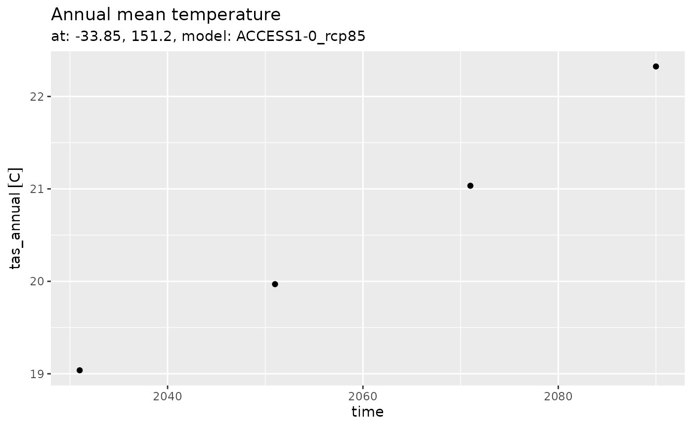
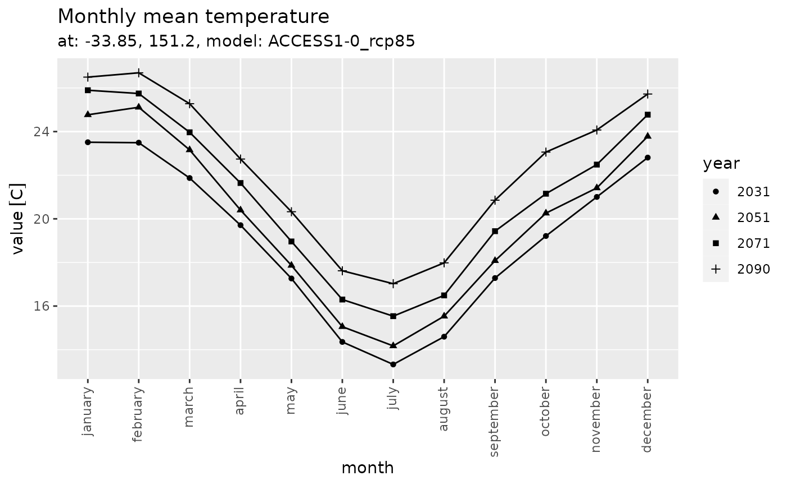
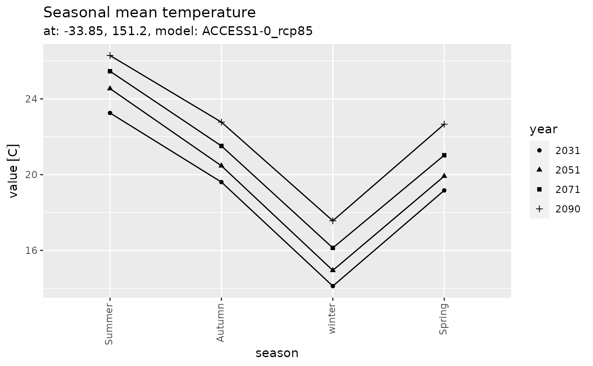

Explore application ready aggregated data - Single point
Application-ready-aggregated-data-single-point.Rmd
library(climateChangeInAustralia)
library(stars)
#> Loading required package: abind
#> Loading required package: sf
#> Linking to GEOS 3.10.2, GDAL 3.4.1, PROJ 8.2.1; sf_use_s2() is TRUE
library(dplyr)
#>
#> Attaching package: 'dplyr'
#> The following objects are masked from 'package:stats':
#>
#> filter, lag
#> The following objects are masked from 'package:base':
#>
#> intersect, setdiff, setequal, union
library(tidyr)
library(forcats)
library(ggplot2)
library(units)
#> udunits database from /usr/share/xml/udunits/udunits2.xmlApplication ready aggregated
See introduction to application ready data. The aggregated files contain Monthly, seasonal and annual data as time-series. They contain a single time value per range period (e.g. 2016-2045 has only 2031-01-01) per grid point (lat/lon), and then model values for monthly, seasonal and annual data (the remaining ‘columns’)
A small download
Note how the datetime_start have no effect …
ccia_dataset_urls <- ccia_dataset_urls()
dataset_url <-
ccia_dataset_urls$
application_ready_aggregated$
Mean_Temperature$
`2016-2045`$
`tas_aus_ACCESS1-0_rcp45_r1i1p1_CSIRO-MnCh-wrt-1986-2005-Scl_v1_mon_seasavg_2016-2045_clim.nc`
dataset_query <-
dataset_url |>
ccia_create_dataset_request_url(access_type = ccia_access_types$NetcdfSubset) |>
ccia_add_netcdf_subset_query(vars = 'all',
lat = -33.86,
lon = 151.20,
# No effect (in this case)
datetime_start = '2016-01-01',
datetime_end = '2045-12-31',
datetime_step = 365)
dataset_download_filepath <-
dataset_query |>
ccia_perform_query(destfile = tempfile(fileext = 'tas_aus_ACCESS1-0_rcp45_seasavg_2016-2045.nc'))
#> file downloaded to: /tmp/RtmpIerRjX/file1cb725348a52tas_aus_ACCESS1-0_rcp45_seasavg_2016-2045.nc
structure(
file.size(dataset_download_filepath),
class = 'object_size'
) |>
format(units = 'MB')
#> [1] "0.1 Mb"
ncdf_tibble <-
dataset_download_filepath |>
stars::read_ncdf() |>
tibble::as_tibble()
#> no 'var' specified, using tas_january, tas_february, tas_march, tas_april, tas_may, tas_june, tas_july, tas_august, tas_september, tas_october, tas_november, tas_december, tas_djf, tas_mam, tas_jja, tas_son, tas_ndjfma, tas_mjjaso, tas_annual
#> other available variables:
#> time, lat, lon
#> Will return stars object with 1 cells.
#> No projection information found in nc file.
#> Coordinate variable units found to be degrees,
#> assuming WGS84 Lat/Lon.
ncdf_tibble
#> # A tibble: 1 × 22
#> lon lat time tas_january tas_febr…¹ tas_m…² tas_a…³ tas_may
#> <dbl> <dbl> <dttm> [C] [C] [C] [C] [C]
#> 1 151. -33.8 2031-01-01 00:00:00 23.7 24.0 22.2 19.5 16.9
#> # … with 14 more variables: tas_june [C], tas_july [C], tas_august [C],
#> # tas_september [C], tas_october [C], tas_november [C], tas_december [C],
#> # tas_djf [C], tas_mam [C], tas_jja [C], tas_son [C], tas_ndjfma [C],
#> # tas_mjjaso [C], tas_annual [C], and abbreviated variable names
#> # ¹tas_february, ²tas_march, ³tas_april
# monthly, seasonal and annual data
names(ncdf_tibble) |>
cat(sep = '\n')
#> lon
#> lat
#> time
#> tas_january
#> tas_february
#> tas_march
#> tas_april
#> tas_may
#> tas_june
#> tas_july
#> tas_august
#> tas_september
#> tas_october
#> tas_november
#> tas_december
#> tas_djf
#> tas_mam
#> tas_jja
#> tas_son
#> tas_ndjfma
#> tas_mjjaso
#> tas_annual
# time range
range(ncdf_tibble$time)
#> [1] "2031-01-01 UTC" "2031-01-01 UTC"A time-series download
ccia_dataset_urls <- ccia_dataset_urls()
# Extract model 'ACCESS1-0_rcp85' through element names
series_urls <-
ccia_dataset_urls$application_ready_aggregated$Mean_Temperature |>
lapply(function(urls){
urls[grepl('ACCESS1-0_rcp85', names(urls))]
})
# Expect 4 results
sapply(series_urls, names)
#> 2075-2104
#> "tas_aus_ACCESS1-0_rcp85_r1i1p1_CSIRO-MnCh-wrt-1986-2005-Scl_v1_mon_seasavg_2075-2104_clim.nc"
#> 2056-2085
#> "tas_aus_ACCESS1-0_rcp85_r1i1p1_CSIRO-MnCh-wrt-1986-2005-Scl_v1_mon_seasavg_2056-2085_clim.nc"
#> 2036-2065
#> "tas_aus_ACCESS1-0_rcp85_r1i1p1_CSIRO-MnCh-wrt-1986-2005-Scl_v1_mon_seasavg_2036-2065_clim.nc"
#> 2016-2045
#> "tas_aus_ACCESS1-0_rcp85_r1i1p1_CSIRO-MnCh-wrt-1986-2005-Scl_v1_mon_seasavg_2016-2045_clim.nc"
# Build requests
series_requests <-
lapply(series_urls, function(url){
url |>
ccia_create_dataset_request_url(access_type = ccia_access_types$NetcdfSubset) |>
ccia_add_netcdf_subset_query(vars = 'all',
lat = -33.86,
lon = 151.20)
})
# Download data
series_filepaths <-
lapply(series_requests, function(req){
filename <- sub('.*\\d/(.*\\.nc).*', '\\1', req$url)
req |>
ccia_perform_query(destfile = tempfile(pattern = 'ccia-', fileext = filename))
})
#> file downloaded to: /tmp/RtmpIerRjX/ccia-1cb75ecb0a4ftas_aus_ACCESS1-0_rcp85_r1i1p1_CSIRO-MnCh-wrt-1986-2005-Scl_v1_mon_seasavg_2075-2104_clim.nc
#> file downloaded to: /tmp/RtmpIerRjX/ccia-1cb72bf91f7etas_aus_ACCESS1-0_rcp85_r1i1p1_CSIRO-MnCh-wrt-1986-2005-Scl_v1_mon_seasavg_2056-2085_clim.nc
#> file downloaded to: /tmp/RtmpIerRjX/ccia-1cb75e461c0ftas_aus_ACCESS1-0_rcp85_r1i1p1_CSIRO-MnCh-wrt-1986-2005-Scl_v1_mon_seasavg_2036-2065_clim.nc
#> file downloaded to: /tmp/RtmpIerRjX/ccia-1cb717e94cd5tas_aus_ACCESS1-0_rcp85_r1i1p1_CSIRO-MnCh-wrt-1986-2005-Scl_v1_mon_seasavg_2016-2045_clim.ncImport into R and do things.
# Merge data into a tibble
series_tibble <-
purrr::map_df(series_filepaths, function(filepath){
filepath |>
stars::read_ncdf() |>
tibble::as_tibble()
})
#> no 'var' specified, using tas_january, tas_february, tas_march, tas_april, tas_may, tas_june, tas_july, tas_august, tas_september, tas_october, tas_november, tas_december, tas_djf, tas_mam, tas_jja, tas_son, tas_ndjfma, tas_mjjaso, tas_annual
#> other available variables:
#> time, lat, lon
#> Will return stars object with 1 cells.
#> No projection information found in nc file.
#> Coordinate variable units found to be degrees,
#> assuming WGS84 Lat/Lon.
#> no 'var' specified, using tas_january, tas_february, tas_march, tas_april, tas_may, tas_june, tas_july, tas_august, tas_september, tas_october, tas_november, tas_december, tas_djf, tas_mam, tas_jja, tas_son, tas_ndjfma, tas_mjjaso, tas_annual
#> other available variables:
#> time, lat, lon
#> Will return stars object with 1 cells.
#> No projection information found in nc file.
#> Coordinate variable units found to be degrees,
#> assuming WGS84 Lat/Lon.
#> no 'var' specified, using tas_january, tas_february, tas_march, tas_april, tas_may, tas_june, tas_july, tas_august, tas_september, tas_october, tas_november, tas_december, tas_djf, tas_mam, tas_jja, tas_son, tas_ndjfma, tas_mjjaso, tas_annual
#> other available variables:
#> time, lat, lon
#> Will return stars object with 1 cells.
#> No projection information found in nc file.
#> Coordinate variable units found to be degrees,
#> assuming WGS84 Lat/Lon.
#> no 'var' specified, using tas_january, tas_february, tas_march, tas_april, tas_may, tas_june, tas_july, tas_august, tas_september, tas_october, tas_november, tas_december, tas_djf, tas_mam, tas_jja, tas_son, tas_ndjfma, tas_mjjaso, tas_annual
#> other available variables:
#> time, lat, lon
#> Will return stars object with 1 cells.
#> No projection information found in nc file.
#> Coordinate variable units found to be degrees,
#> assuming WGS84 Lat/Lon.
series_tibble
#> # A tibble: 4 × 22
#> lon lat time tas_january tas_febr…¹ tas_m…² tas_a…³ tas_may
#> <dbl> <dbl> <dttm> [C] [C] [C] [C] [C]
#> 1 151. -33.8 2090-01-01 00:00:00 26.5 26.7 25.3 22.7 20.3
#> 2 151. -33.8 2071-01-01 00:00:00 25.9 25.7 24.0 21.6 19.0
#> 3 151. -33.8 2051-01-01 00:00:00 24.8 25.1 23.2 20.4 17.9
#> 4 151. -33.8 2031-01-01 00:00:00 23.5 23.5 21.9 19.7 17.3
#> # … with 14 more variables: tas_june [C], tas_july [C], tas_august [C],
#> # tas_september [C], tas_october [C], tas_november [C], tas_december [C],
#> # tas_djf [C], tas_mam [C], tas_jja [C], tas_son [C], tas_ndjfma [C],
#> # tas_mjjaso [C], tas_annual [C], and abbreviated variable names
#> # ¹tas_february, ²tas_march, ³tas_april
range(c(series_tibble$lon, series_tibble$lat))
#> [1] -33.85 151.20
range(series_tibble$time)
#> [1] "2031-01-01 UTC" "2090-01-01 UTC"
unique(series_tibble$time)
#> [1] "2090-01-01 UTC" "2071-01-01 UTC" "2051-01-01 UTC" "2031-01-01 UTC"Some data visualisation
Annual
series_tibble |>
ggplot(aes(x = time, y = tas_annual)) +
geom_point() +
labs(title = 'Annual mean temperature',
subtitle = 'at: -33.85, 151.2, model: ACCESS1-0_rcp85')
Monthly
series_tibble |>
dplyr::select(time, dplyr::contains(month.name)) |>
tidyr::pivot_longer(-time) |>
dplyr::arrange(time) |>
dplyr::mutate(month = sub('tas_', '', name),
year = format(time, '%Y'),
month = forcats::fct_inorder(month)) |>
ggplot(aes(x = month, y = value, shape = year, group = year)) +
geom_line() +
geom_point() +
labs(title = 'Monthly mean temperature',
subtitle = 'at: -33.85, 151.2, model: ACCESS1-0_rcp85') +
theme(axis.text.x = element_text(angle = 90, hjust = 1, vjust = 0.33))
Seasonal
series_tibble |>
dplyr::select(time, tas_djf, tas_mam, tas_jja, tas_son) |>
tidyr::pivot_longer(-time) |>
dplyr::arrange(time) |>
dplyr::mutate(season = dplyr::case_when(
name == 'tas_djf' ~ 'Summer',
name == 'tas_mam' ~ 'Autumn',
name == 'tas_jja' ~ 'winter',
name == 'tas_son' ~ 'Spring',
),
year = format(time, '%Y'),
season = forcats::fct_inorder(season)) |>
ggplot(aes(x = season, y = value, shape = year, group = year)) +
geom_line() +
geom_point() +
labs(title = 'Seasonal mean temperature',
subtitle = 'at: -33.85, 151.2, model: ACCESS1-0_rcp85') +
theme(axis.text.x = element_text(angle = 90, hjust = 1, vjust = 0.33))